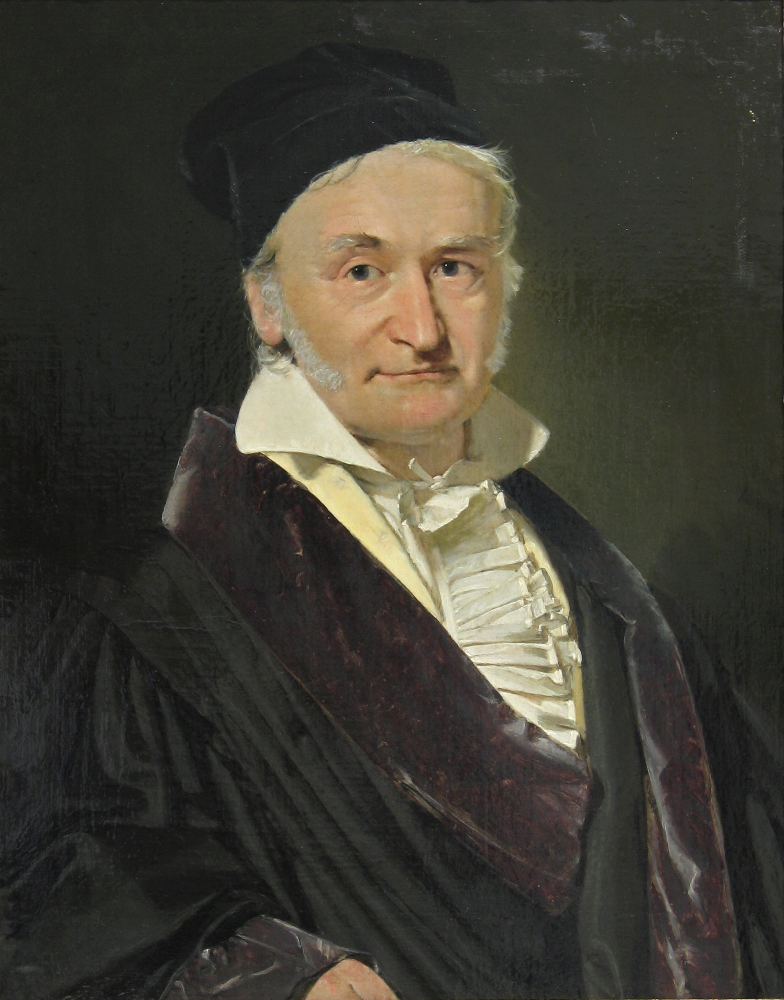

The Gauss-Seidel method was developed by German mathematicians Carl Friedrich Gauss and Philipp Ludwig von Seidel. Although Gauss described the basic method, it was Seidel who formally published it in 1874. The method emerged as an improvement over the Jacobi method, taking advantage of the most recently calculated values to accelerate convergence. Its efficiency and simplicity made it one of the most popular iterative methods for solving systems of linear equations.
Quick Info
Category:
Numerical Methods
Time Complexity:
O(kn²) where k is iterations
Space Complexity:
O(n²)
Input Type:
Matrix
Gauss-Seidel Method
Description
The Gauss-Seidel method is an iterative method for solving systems of linear equations. It is an improvement over the Jacobi method that uses the most recently calculated values in the same iteration. The method is especially efficient for diagonally dominant matrices and is widely used in engineering and physics applications.
How It Works
- Preparation:
- Ensure matrix is diagonally dominant
- Choose initial solution x⁽⁰⁾
- Set convergence criterion ε
- Iteration:
- For each equation i in the system
- Use updated values of x₁, x₂, ..., xᵢ₋₁
- Use previous values of xᵢ₊₁, ..., xₙ
- Calculate new xᵢ
- Update Formula:
- xᵢ = (bᵢ - Σⱼ≠ᵢ aᵢⱼxⱼ) / aᵢᵢ
- Where aᵢⱼ are matrix elements
- bᵢ are constant vector elements
- Convergence:
- Check if ||x⁽ᵏ⁺¹⁾ - x⁽ᵏ⁾|| < ε
- Continue until convergence
- Or until maximum iterations reached
History

Visualization
Click Start to begin visualization
Implementation
import numpy as np
def gauss_seidel(A, b, x0=None, tolerance=1e-6, max_iterations=100):
"""
Solve Ax = b using Gauss-Seidel method.
Args:
A: Coefficient matrix
b: Constants vector
x0: Initial guess (default: zeros)
tolerance: Error tolerance
max_iterations: Maximum number of iterations
Returns:
Solution vector x
"""
n = len(A)
if x0 is None:
x0 = np.zeros(n)
x = x0.copy()
for iteration in range(max_iterations):
x_old = x.copy()
for i in range(n):
sum1 = sum(A[i][j] * x[j] for j in range(i))
sum2 = sum(A[i][j] * x_old[j] for j in range(i + 1, n))
x[i] = (b[i] - sum1 - sum2) / A[i][i]
if np.allclose(x, x_old, rtol=tolerance):
print(f"Converged in {iteration + 1} iterations")
return x
print("Warning: Maximum iterations reached")
return x
# Example usage
if __name__ == "__main__":
# Example system:
# 4x₁ - x₂ = 1
# -x₁ + 4x₂ = 2
A = np.array([[4, -1],
[-1, 4]])
b = np.array([1, 2])
solution = gauss_seidel(A, b)
print("Solution:", solution)
print("Verification:", np.allclose(A @ solution, b))
#include <vector>
#include <cmath>
#include <iostream>
class GaussSeidel {
private:
double tolerance;
int maxIterations;
public:
GaussSeidel(double tol = 1e-6, int maxIter = 100)
: tolerance(tol), maxIterations(maxIter) {}
std::vector<double> solve(
const std::vector<std::vector<double>>& A,
const std::vector<double>& b
) {
int n = A.size();
std::vector<double> x(n, 0.0); // Initial guess
for (int iter = 0; iter < maxIterations; iter++) {
std::vector<double> x_old = x;
for (int i = 0; i < n; i++) {
double sum1 = 0.0, sum2 = 0.0;
// Sum for j < i (using new values)
for (int j = 0; j < i; j++) {
sum1 += A[i][j] * x[j];
}
// Sum for j > i (using old values)
for (int j = i + 1; j < n; j++) {
sum2 += A[i][j] * x_old[j];
}
x[i] = (b[i] - sum1 - sum2) / A[i][i];
}
// Check convergence
double error = 0.0;
for (int i = 0; i < n; i++) {
error = std::max(error,
std::abs(x[i] - x_old[i]));
}
if (error < tolerance) {
std::cout << "Converged in "
<< iter + 1 << " iterations\n";
return x;
}
}
std::cout << "Warning: Maximum iterations reached\n";
return x;
}
};
int main() {
// Example system:
// 4x₁ - x₂ = 1
// -x₁ + 4x₂ = 2
std::vector<std::vector<double>> A = {
{4, -1},
{-1, 4}
};
std::vector<double> b = {1, 2};
GaussSeidel solver;
auto solution = solver.solve(A, b);
std::cout << "Solution:\n";
for (double x : solution) {
std::cout << x << " ";
}
std::cout << std::endl;
return 0;
}
public class GaussSeidel {
private readonly double tolerance;
private readonly int maxIterations;
public GaussSeidel(double tolerance = 1e-6, int maxIterations = 100) {
this.tolerance = tolerance;
this.maxIterations = maxIterations;
}
public double[] Solve(double[,] A, double[] b) {
int n = b.Length;
double[] x = new double[n]; // Initial guess: zeros
for (int iter = 0; iter < maxIterations; iter++) {
double[] x_old = (double[])x.Clone();
for (int i = 0; i < n; i++) {
double sum1 = 0.0, sum2 = 0.0;
// Sum for j < i (using new values)
for (int j = 0; j < i; j++) {
sum1 += A[i,j] * x[j];
}
// Sum for j > i (using old values)
for (int j = i + 1; j < n; j++) {
sum2 += A[i,j] * x_old[j];
}
x[i] = (b[i] - sum1 - sum2) / A[i,i];
}
// Check convergence
double error = 0.0;
for (int i = 0; i < n; i++) {
error = Math.Max(error,
Math.Abs(x[i] - x_old[i]));
}
if (error < tolerance) {
Console.WriteLine($"Converged in {iter + 1} iterations");
return x;
}
}
Console.WriteLine("Warning: Maximum iterations reached");
return x;
}
public static void Main() {
// Example system:
// 4x₁ - x₂ = 1
// -x₁ + 4x₂ = 2
double[,] A = new double[,] {
{4, -1},
{-1, 4}
};
double[] b = new double[] {1, 2};
var solver = new GaussSeidel();
double[] solution = solver.Solve(A, b);
Console.WriteLine("Solution:");
foreach (double x in solution) {
Console.Write($"{x:F6} ");
}
Console.WriteLine();
}
}
Complexity Analysis
Time Complexity
The time complexity is O(kn²), where:
- k is the number of iterations
- n is the size of the matrix
- Each iteration requires O(n²) operations
- k depends on tolerance and convergence
Space Complexity
The space complexity is O(n²), which includes:
- Matrix storage: O(n²)
- Solution vector: O(n)
- Temporary vector for convergence: O(n)
Advantages and Disadvantages
Advantages
- Faster convergence than Jacobi
- Requires less memory than direct methods
- Ideal for sparse matrices
- Easy to implement
Disadvantages
- Convergence not guaranteed
- Requires diagonal dominance
- Speed depends on initial values
- Not parallelizable like Jacobi